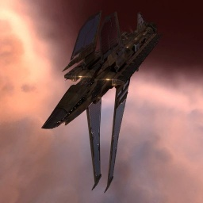

Maelstrom

Тип корабля: Линкор
Государство/Организация: Minmatar
Примерная стоимость: 297.000.000 ISK
Описание
Ключевая особенность «Мальстрёма» — его многофункциональность. Его защитные системы идеально подходят для одиночных набегов или сражений в малых отрядах, а восемь точек монтажа орудийных установок обеспечивают потрясающую плотность ведения огня.
Характеристики
Корпус
Запас прочности корпуса: 7.700 ед.
Вместимость грузового отсека: 790 м^3
Объем отсека для дронов: 100 м^3
Пропускная способность канала телеуправления: 100 Мбит/с
Отсек спасательного фрегата: 1 ед.
Масса: 103.600.000 кг
Занимает объем: 470.000,0 м^3 (50.000,0 м^3 в разобранном виде)
Влияние инертности конструкции: 0,136x
Сопротивление корпуса ЭМ-урону: 33 %
Сопротивление корпуса термальному урону: 33 %
Сопротивление корпуса кинетическому урону: 33 %
Сопротивление корпуса фугасному урону: 33 %
Броня
Запас прочности брони: 8.250 ед.
Сопротивление брони ЭМ-урону: 60 %
Сопротивление брони термальному урону: 35 %
Сопротивление брони кинетическому урону: 25 %
Сопротивление брони фугасному урону: 10 %
Щит
Запас прочности щита: 8.800 ед.
Влияние на время регенерации щитов: 41 минут и 40 секунд
Сопротивление щита ЭМ-урону: 0 %
Сопротивление щита термальному урону: 20 %
Сопротивление щита кинетическому урону: 40 %
Сопротивление щита фугасному урону: 50 %
Сопротивление средствам РЭП
Сопротивление накопителя нейтрализирующему воздействию: 0 %
Сопротивление воздействию генератору стазис-поля: 0 %
Сопротивление воздействию помех на наводку вооружения: 0 %
Накопитель энергии
Емкость накопителя: 6.000,0 ГДж
Время востановления заряда: 20 минут и 50 секунд
Целеуказания
Максимальная дальность захвата цели: 90 км
Максимальное количество захваченных целей: 7
Радиус сигнатуры: 460 м
Разрешающая способность систем захвата цели: 117 мм
Эффективность радарной системы: -
Эффективность магнитнометрической системы: -
Эффективность гравиметрической системы: -
Эффективность ладарной системы: 21 ед.
Двигательная установка
Максимальная скорость: 94 м/с
Скорость в варп-режиме: 3,0 а.е./с.
Служба оснащения
Мощность ЦПУ: 640,0 Тф
Мощность реактора: 21.000 МВт
Калибровка: 400 ед.
Точки монтажа орудийных установок: 8
Точки монтажа пусковых установок: -
Разъемы большой мощности: 8
Разъемы средней мощности: 6
Разъемы малой мощности: 5
Разъемы под установку тюнинг-модулей: 3